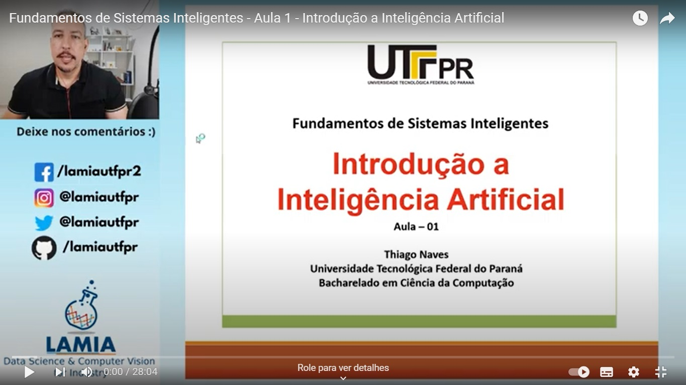

O que são Sistemas Inteligentes?
Sistemas Inteligentes (SI) são sistemas computacionais que simulam a inteligência humana para realizar tarefas e resolver problemas de forma autônoma. Eles possuem diversas características que os diferenciam dos sistemas tradicionais, como:
Aprendizado e adaptação: aprendem com dados e experiências, se adaptando a novas situações.
Raciocínio e tomada de decisão: analisam informações e tomam decisões de forma lógica e estratégica.
Resolução de problemas: decompõem problemas em subproblemas menores e encontram soluções eficazes.
Interação com o ambiente: coletam informações do ambiente e controlam dispositivos físicos.
Autonomia e autossuficiência: operam com pouca ou nenhuma intervenção humana.
Aplicações:
Robótica: controle de robôs autônomos.
Automação: automatização de processos.
Diagnóstico médico: análise de imagens e dados para auxiliar no diagnóstico de doenças.
Finanças: análise de mercado e previsão de tendências para investimentos.
Segurança: detecção de fraudes e anomalias em sistemas.
Suporte ao cliente: chatbots e sistemas de atendimento virtual.
Exemplos:
Carros autônomos.
Assistentes virtuais: Siri, Alexa e Google Assistente.
Sistemas de recomendação: plataformas de streaming e e-commerce.
Softwares de reconhecimento facial.
Sistemas de tradução automática.
O campo da Inteligência Artificial e dos Sistemas Inteligentes está em constante evolução, com novas tecnologias e aplicações sendo desenvolvidas a cada dia. Os SIs têm o potencial de revolucionar diversos setores da sociedade e tornar nossa vida mais fácil, eficiente e segura.
Exemplo de Imagem
Exemplo de Vídeo
https://youtu.be/hvAzohYcF6I?si=yVaziTheVEBcAnge